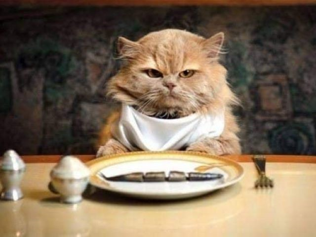
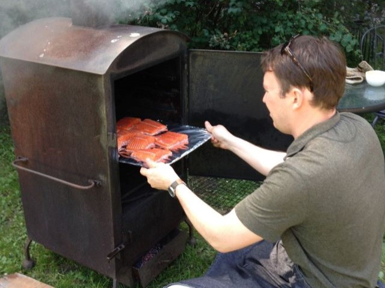
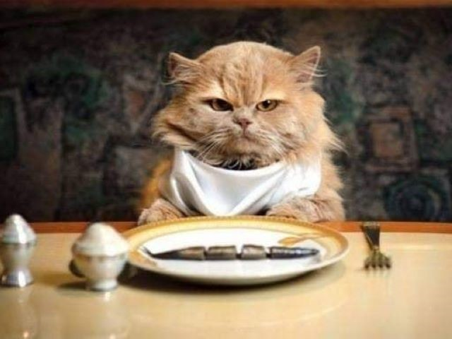
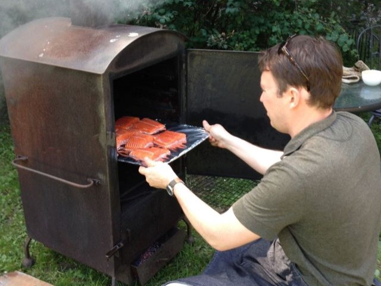

Miks me kala ei söö
Peame endid küll mererahvaks, ent kala sööme suhteliselt vähe ja pole ka märke sellest, et kalaroad lähitulevikus meie toidulaual rohkem ruumi hakkaksid võtma, pigem vastupidi. Nii pole see alati olnud — maarahva üheks levinuimaks leivakõrvaseks oli soolasilk, mida kalarandades vilja või kartuli vastu vahetamas käidi, ise tünnidesse soolati ja aastaringselt lauale anti. XIX sajandi elu kujutav kirjandusvool, mis hiljem kriitiliseks realismiks ristiti, toob meieni läppuva ja tulisoolase silgumaitse, millega kitsid peremehed sulasrahvast piinasid, ise samal ajal suitsusinke vuhtides. Ei ma õhka taga silgusajandeid, viitan vaid maarahva ajaloole, millest osaliselt tuleneb räime ja igasuguse kala nüüdne pidamine teisejärguliseks toiduks, paremate palade aseaineks.
Veelgi kaugemasse ajalukku kiigates näeme, et kalale on teatavat teisejärgulisust lisanud ka see, et kala on paastuajal lubatud toit, mis seostab teda meie meeltes lihasuretamise ja askeesiga. Tõsi, on ka täiesti vastupidist suhtumist, mis ilmekaimalt sõnastub folkloorses ütlemises „söö sibulat ja kala, siis seisab nagu tala“, ent see ei pruugi olla enamat kui iselaadne õigustus, väljavabandamine kalasöömisele.
Lähisminevikus panid kalaroogade reputatsioonile põntsu läinud sajandi 60-ndatel aastatel kogu NSV Liidus kehtestatud kalapäevad — neljapäeviti valmistati kõikides restoranides ja sööklates vaid kalatoite. Rahvale räägiti kalasöömise kasulikkusest, ent kõik teadsid, et kalapäevade tegelikuks põhjuseks on riigi lihanappus. Kala (külmutatud turska, heiki jm) oli piisavalt, sest N Liidu kalalaevad viisid ilmamerel läbi ohjeldamatut püüki, mis piirnes röövkalastusega. Kala oli mitu korda odavam kui liha, see aga sünnitas kala väärtusetuks või väheväärtuslikuks toiduks pidavat hoiakut, mis pole meie alateadvusest kadunud veel nüüdki, mil enamuse kalade kilohind käib lihahinnast kõrgelt üle.
Need olid ajaloolis-psühholoogilised põhjused kala alavääristamiseks, ent kala laiemat kasutamist takistavad ka mõned muud asjad.
Esimesena nimetagem värske kala kiiret riknevust. Värske kala jõudmine turule või poodi nõuab eriti head logistikat; soojal suveajal võib kala nässu minna juba kalamehe paadis, kui too pikemalt askeldama jääb ning kala mahajahutamiseks pole jääd varunud. Kiire riknevuse tõttu kasutatakse rohkelt kalade sügavkülmutamist. Korralikke roogi saab teha ka külmutatud kalast, kuid värskest tehtute vastu need siiski ei saa — vahe on peaaegu sama suur nagu värsketel ja külmutatud-sulatatud maasikatel.
Teiseks: koju toodud värske kala ettevalmistamine on üsna töömahukas (kui võrrelda lihalõikamisega) ja pole ka kõige mugavam ega puhtam tegevus. Soomused lendavad mööda kööki laiali, kuivav kalalima kleepub kitina tööpindade külge, sisemused haisevad, veri määrib ja teravad luud vigastavad vilumatu kalapuhastaja sõrmi. Hõlpsam on midagi muud teha, Tõsi, me võime osta kala ka puhastatuna või fileerituna ning see teeb koduse talitamise märksa hõlpsamaks. Ent kui me valmistame toitu omaenese püütud kalast, oleks ju narr seda mitte ise puhastada. (Muide, omapüütud kaladel on hoopis teistsugune, märksa rõõmsam, südamlikum kõrvalmaitse — hoopis teistsugune kui omakasvatatud põrsa või küüliku kurb mekk).
Kolmandaks: kala nõuab söömisel ettevaatlikkust. Kui hoolikalt me ka peeni luukesi välja ei nopiks, võib mõni pehme, peaaegu nähtamatu luu meile kurku sattuda, köhimist või suisa kurguvaeva valmistada. Kala ei saa süüa aplalt ja hooletult, suurte suutäitena kugistada. vaid iga suutäis tuleb enne neelamist keelega läbi kompida. Kala valmistamine nõuab hoolikust ja oskusi luude väljavõtmisel, söömine aga teatavat harjumist, sest mõni luu võib ikka veel peidus olla. See harjumus ei kujune välja muidu kui kala süües, ent mõnelgi inimesel on kalasöömise vastu juba lapsepõlvest päritud tõrge, põhjuseks üsna pisike kurku vaevanud luukene.
Need olid laias laastus põhjused, miks me kala kodusest valmistamisest nii tihti mööda hiilime: poepelmeene või viinereid on söögikõlbulikeks muuta ikkagi palju kiirem ja hõlpsam. Õigupoolest on ühe korraliku kalaroa valmistamine, kui me teeme seda algusest lõpuni ise, lausa omaette kodune kangelastegu. Ja mis parata, et me pole selliseks ennastohverdavaks kangelaslikkuseks just sageli valmis. Küpseme veel!